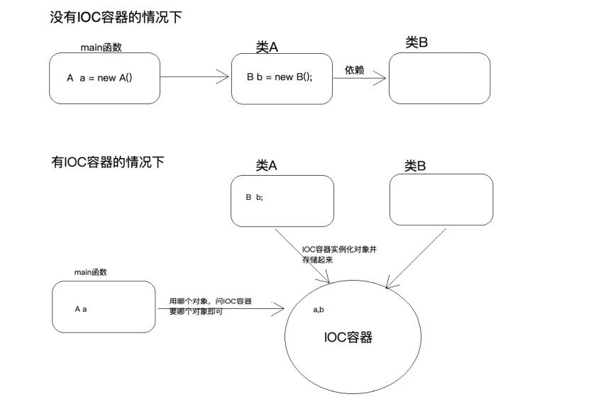
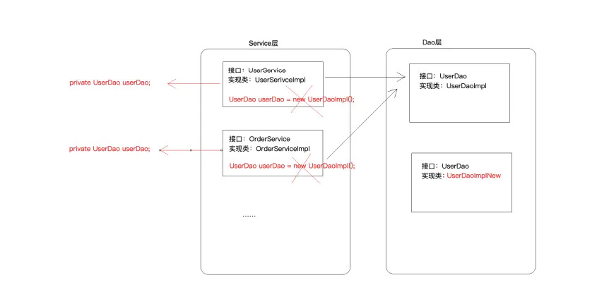
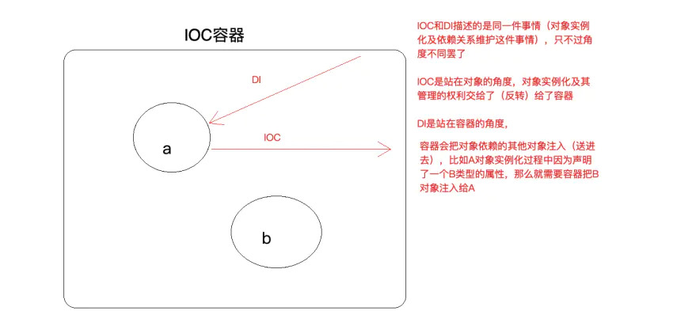
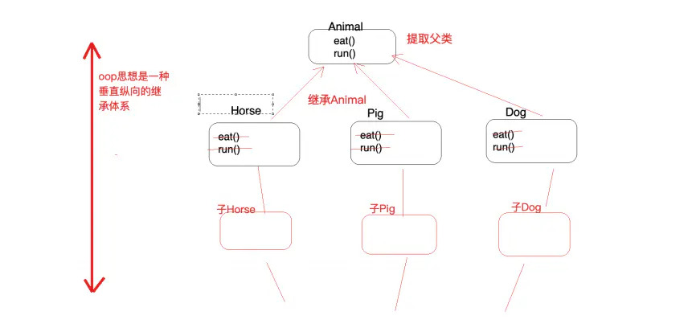
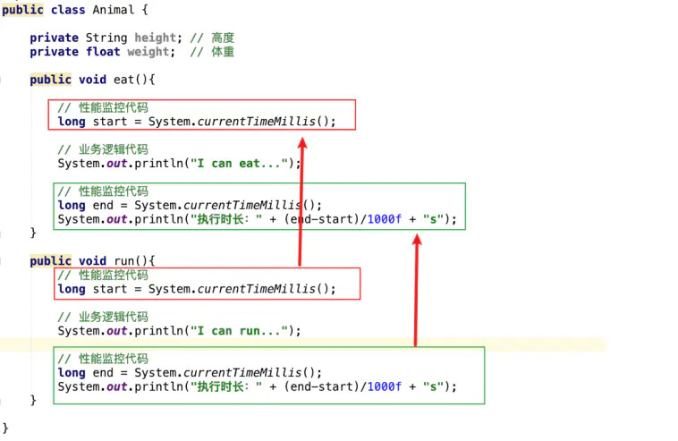
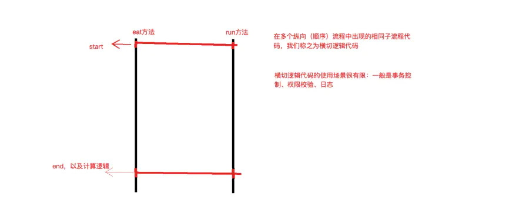
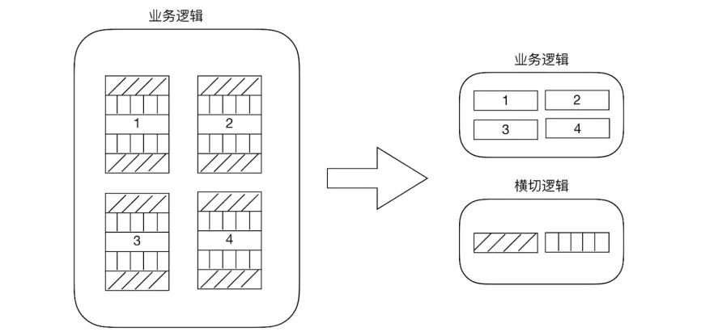

我这个人记性很差，看过的很多理论知识，过段时间就忘记了，只能记个大概，俗话说，好记性不如烂笔头，所以记录一下；另外还有位高人曾经点拨，把你学到的理论跟别人去说，不怕说错，错了纠正，跟下个人再说，最终说出来的东西，自己也记得住，结果肯定也正确。
IOC 概念
IOC： Inversion of Control （控制反转）
它是一个技术思想，不是一个技术实现
描述的事情
Java开发领域对象的创建，管理的问题
传统开发方式
比如类A依赖于类B，往往会在类A中new一个B的对象
IOC思想下开发方式
不需要自己去new对象，而是由IOC容器（Spring框架）去帮助我们实例化对象并且管理它，我们需要使用哪个对象，去IOC中拿即可
为什么叫控制反转：
控制：指的是对象创建（实例化、管理）的权利
反转：控制权交给外部环境（Spring框架、IOC容器）是指程序不再主动去new或获取外部资源，而是IOC/DI容器将程序所需资源、创建的对象注入程序，对于程序创建对象的操作来说发生了反转。反转使类之间松散耦合，管理更加有序，维护简单，一旦相关类发生变动不再需要修改大量的new操作中相关代码，而只需要修改配置文件

IOC 解决了对象与对象之间的耦合问题

DI：Dependancy Injection（依赖注入）
在容器内注入程序相关资源、依赖关系，外部资源指类在内部不能得到或实现的东西，如A类调用B类，B类就是A类的外部资源，A类读取文件，文件就是A类的外部资源
IOC/DI容器实现IOC思想，提供对象创建、装配、生命周期管理
区别：IOC 和 DI 描述的是一件事情，只不过角度不同罢了

AOP 概念
AOP Aspect oriented Programming （面向切面）
AOP是OOP的延续，所以在了解AOP之前，我们先说下OOP，OOP 是一种垂直继承体系，OOP 的三大特征：封装，继承，多态

OOP编程思想可以解决大多数的代码重复问题，但是有有些情况是处理不了的，比如：在顶级父类Animal中为了监控性能，多个方法中相同位置出现了重复代码，OOP有些束手无策，此时就需要我们使用AOP来解决


横切逻辑代码存在的问题
横切代码重复问题
横切逻辑代码和业务代码混杂在一起，代码臃肿，维护不方便
解决方法
AOP独辟蹊径提出横向抽取机制，将横切逻辑代码和业务逻辑代码分离

AOP 解决的问题
在不改变原有业务逻辑情况下，增强横切逻辑代码，根本上解耦合，避免横切逻辑代码重复
为什么叫（AOP）面向切面编程
切：指的是横切逻辑，原有业务逻辑代码我们不能动，只能操作横切逻辑代码，所以面向横切逻辑
面：横切逻辑代码往往要影响的是很多个方法，每一个方法都如同一个点，多个点构成面
一般AOP适用场景
- 譬如接口服务controller层通常在接口入库需要打印接口的名称，入参等，在接口出口打印接口运行的结果，这就是AOP常用的场景之一。
- 另外spring的filter其实也是AOP的实现，权限校验等一般就是放在filter中进行的。